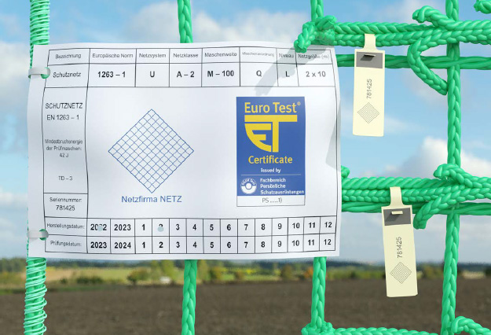

Werden Mängel an Schutznetzen (Sicherheitsnetzen) oder Netzzubehör festgestellt, dürfen diese Teile nur dann weiter eingesetzt werden, wenn durch eine zur Prüfung befähigte Person festgestellt ist, dass die Sicherheit durch die Mängel nicht beeinträchtigt ist.
Sicherheitstechnische Mängel können z. B. sein:
Sind mehr als 2 benachbarte Maschenschenkel im Netz beschädigt, ist das Netz auszutauschen oder unmittelbar zu reparieren.
Ist die Zuordnung des Netzes zu den Prüfmaschen nicht möglich, ist das Netz nicht mehr weiter zu verwenden. (siehe auch Abschnitt 3.3 Kennzeichnung)
Schutznetze (Sicherheitsnetze) und Netzzubehör sind entsprechend den Angaben des Herstellers zu lagern.
Geeignete Lagerung bedeutet zum Beispiel:
Beschädigte Schutznetze (Sicherheitsnetze) und Netzzubehör dürfen nur durch fachkundige Personen instandgesetzt werden. Das kann insbesondere der Hersteller oder Personen, die von ihm benannt wurden, sein. Es darf hierbei nur Material verwendet werden, das in seiner Beschaffenheit den Herstellerangaben entspricht.
Die Unternehmerin bzw. der Unternehmer hat entsprechend § 3 Abs. 6 der Betriebssicherheitsverordnung die Prüffristen und den Prüfumfang für Schutznetze (Sicherheitsnetze) festzulegen. Mit einer Baumusterprüfung nach EN 1263-1 wird festgestellt, dass das betreffende Schutznetz (Sicherheitsnetz) bis 12 Monate nach Herstellung sicher verwendet werden darf. Sollen ältere Schutznetze (Sicherheitsnetze) eingesetzt werden, ist es sicherzustellen, dass das Mindest-Energieaufnahmevermögen den vom Hersteller angegebenen Wert nicht unterschreitet. Hierzu ist dann ein Nachweis zu führen, indem eine Prüfmasche aus dem Schutznetz (Sicherheitsnetz) entnommen wird und durch eine zur Prüfung befähigte Person, z. B. bei einer geeigneten Prüf- und Zertifizierungsstelle oder bei dem Hersteller, geprüft wird. Die Prüfung des Mindest-Energieaufnahmevermögens hat nach DIN EN 1263-1 zu erfolgen und darf nicht länger als 12 Monate nach Herstellung des Schutznetzes (Sicherheitsnetzes) oder nach der letzten erfolgreichen Prüfung der Alterung zurückliegen.
| Hinweis |
| Die Forderung nach einer Prüfung des Schutznetzes vor der Verwendung auf der Baustelle gilt auch dann, wenn es sich um eine erstmalige Verwendung handelt und das Herstellungsdatum oder das Datum der letzten Prüfung länger als ein Jahr zurückliegt. Es ist die Gebrauchsanleitung des Herstellers zu beachten. |
Schutznetze (Sicherheitsnetze) haben vom Hersteller eingearbeitete Prüfmaschen, um die Festigkeitsminderung der Netzgarne infolge Alterung feststellen zu können.
Die Register-Nummer auf dem Label ist dieselbe Nummer, die sich auf den Plomben der Prüfmaschen und an der Plombe am Netz befindet.
Die Unternehmerin bzw. der Unternehmer muss die Ergebnisse der Prüfung nachvollziehbar dokumentieren.
Der Zeitpunkt der letzten Alterungsprüfung bzw. das Datum der nächsten Prüfung muss aus den Angaben der Kennzeichnung am Schutznetz (Sicherheitsnetz) ersichtlich sein (siehe Abb. 13).

Abb. 13 Kennzeichnung am Schutznetz (Sicherheitsnetz)
Abb. 14 Prüfplaketten